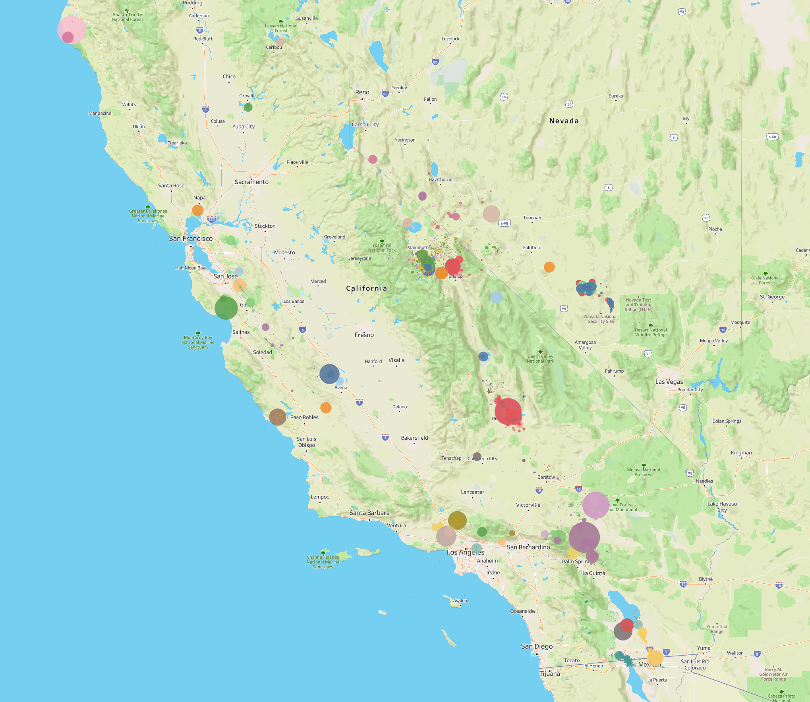

Project Overview
Scott
>Your Project 3 team has designed and implemented a visualization engine that ingests Summary and Detailed Earthquake data that has been processed by our data preparation engine. The Visualizer leverages the power of Tableau to offer interactive maps and charts that enable the Geologist to select an earthquake and set of earthquakes and see the pattern of seismic events leading up to the quake in question. This three dimensional chart shows a timeline, magnitude of the earthquake and a selectable metric at the same time and an intuitive and insightful visual. The interactive maps places all the events geographically color coded by the earthquake and its related leading events.
The visualizer receives data from the pre-processor which ingests USGS raw data on earthquakes in CA and NV for the last 50 years. The parameters are set to look for a set of events leading up to an earthquake 50 km in distance and up to 1 year before each earthquake of magnitude 5.5 (Big Quakes) and above. It builds two tables, a summary table that lists each of the earthquakes with measurements from the USGS and the summary of events by magnitude range (every 0.5 on the Richter scale). This table only has a few hundred rows. The second table lists each earthquake and all its leading events joined by the earthquake in questions USGS ID. This table has about 150,000 rows which Tableau handles without a sweat. Over 10 Million iterations of calculations are done each time we run the pre-processing engine.
Said
.png) >
>
For us to set up and properly format our data to feed into a machine learning algorithm we first had to download 50 years’ worth of earthquake data from the USGS site as CSV’s. We then imported all our data into a SQLite database and used five different libraries to create our features. From there all that was left to do was use import our data into Jupyter’s library “skit learn” and create our machine learning model.
On the back end our flask app takes the USGS API and formats it for us to grab the last 30 days, the next 30 days, and the output of our machine learning for any user inputted date. On the front end the flask app pushes that data to a bubble map.
Trevor
.png) >
>
Our JavaScript displays three different maps, all with data imported from our flask app. In the top right corner is a calendar dropdown which will allow a user to select any day, month, or year from the last 50 years and display earthquake data from that day in the form of a bubble map. The map’s show from left to right, the past 30 days, our predicted earthquake magnitude and locations in the next 30 days, and what actually happened 30 days from that date. Each bubble will show the magnitude of an earthquake and the location. The bubbles size is based off the size of the earthquakes magnitude.